Ders 1: RF'ye giriş ve temel kavramlar
Noise · White Noise · Pink noise · Antennas · Patch Antenna · RF Filters
RF System Design for Communications — lecture notes, homework, and projects at Gebze Technical University (GTU) Electronics Engineering
RF alıcı-verici sistemleri: kazanç, gürültü, doğrusalsızlık (P1dB, IP3) ve sistem bütçesi; 4G LTE dönem projesi.
RF transceiver systems: gain, noise, nonlinearity (P1dB, IP3) and system budgets; a 4G LTE term project.
Bu sayfada: Ders Notları Ders Tekrarı Dijital Notlar (LaTeX) Final/Vize Çalışması Ödevler Projeler
El yazısı notların LaTeX ile yazılmış, aranabilir dijital versiyonları. Şablon ve derleme: latex-sablon.
Noise · White Noise · Pink noise · Antennas · Patch Antenna · RF Filters
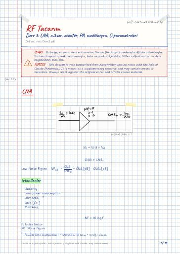
LNA · istenilenler · Mixers · Upconversion · Down conversion · Osilatörler & VCO (Voltage controlled oscilator)
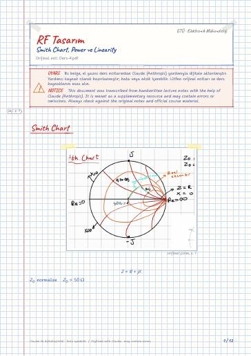
Smith Chart · Softwares · Measurement Devices · Instantaneous Power (anlık güç) · Power & Phasor · Complex Power
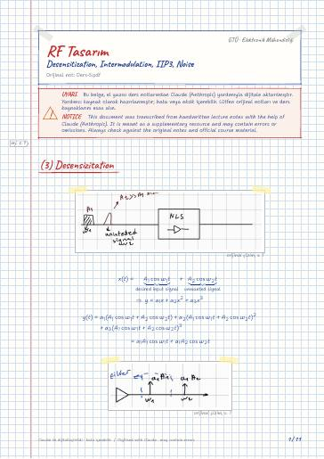
(3) Desensizitation · (4) Intermodulation · Cascaded Nonlinear Stages · Noise · Device Noise · Resistor Noise
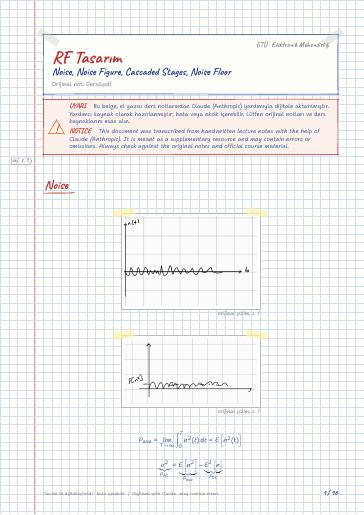
Noise · Input referred Noise · How to find input referred Noise · Noise Figure (NF)dB · Noise Factor (F) · Noise in Cascaded Stages
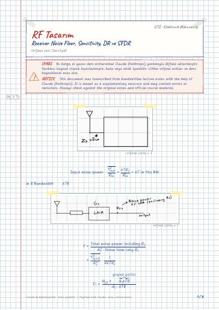
Receiver noise Floor · Receiver SNR & Noise · Sensitivity and Dynamic Range · Dynamic Range · SFDR · Spur-free Dynamic Range
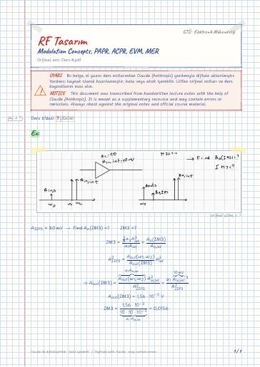
Modulation Concepts · 1-Detectability · 2) Band width Efficiency · 3) Max channel capacity (Shannon) · 4) Power Efficiency · 5) Peak to Average Ratio
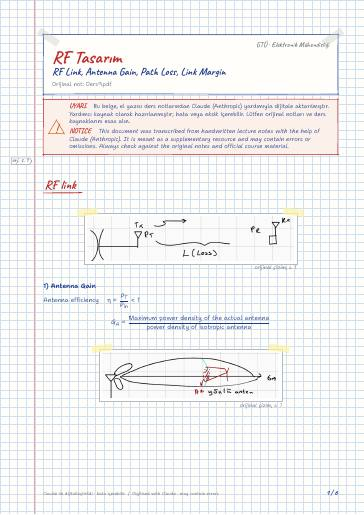
RF link · Alıcıdaki · LOS olmazsa · Link Margin · Link Budget Table
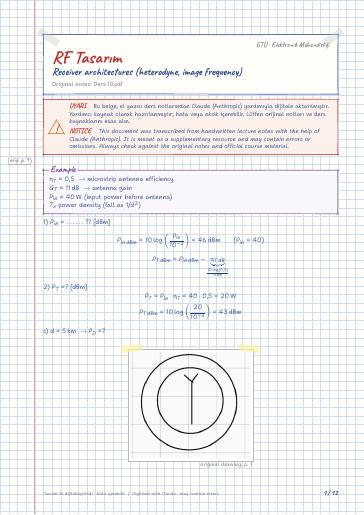
Design Architecture of Receivers · GSM 900 band · Down Conversion · Heterodyne Receivers · Image Frequency: Hayal Frekans · 2 scenarios
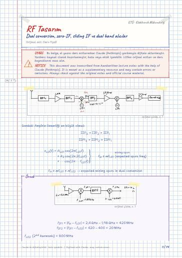
Dual Conversion receivers · Disadvantages · Advantages · Removing Secondary Image · Quadrature Signals & Quadrature Down conversion · Zero-(Second) IF Heterodyne Receiver
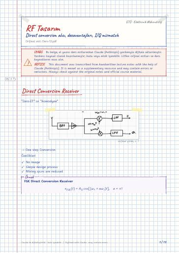
Direct Conversion Receiver · Drawbacks of Direct Conversion Receivers · (1) LO Leakage · (2) DC offset · Solving DC Offset · (3) Even Order Distorsion
90^° Phase Shift · Hilbert Transform · Implementation of 90^° phase shift · (1) RC-CR Network · (2) Quadrature down Conversion · Image Reject Receivers (Hartley Architecture)
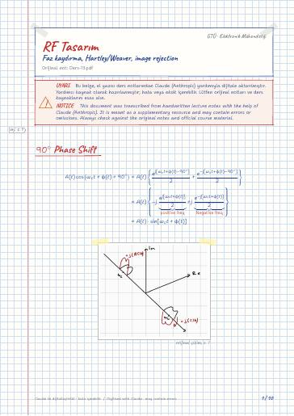
90^° Phase Shift · Hilbert Transform · Implementation of 90^° phase shift · (1) RC-CR Network · (2) Quadrature down Conversion · Image Reject Receivers (Hartley Architecture)
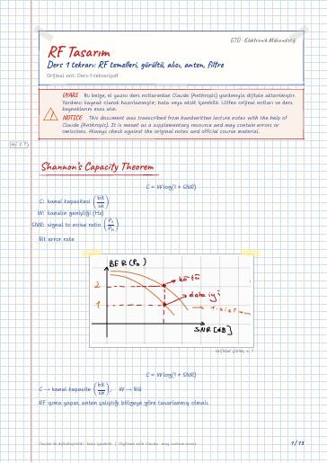
Shannon's Capacity Theorem · Noise · White noise · Pink noise · Reciver · RF Front-End

Power and Phasor · Complex power · Maximum power · 1 Harmonic distortion · 2 Gain compression · 3 Desensitization
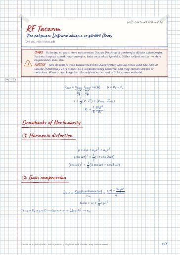
Drawbacks of Nonlinearity · 1 Harmonic distortion · 2 Gain compression · 3 Desensitization · 4 Intermodulation · Noise
Görüntü İşleme · Makine Öğrenmesinin Temelleri
GitHub'da klasörü aç← 7. Dönem
Ders materyallerinin hakları ilgili öğretim üyelerine ve GTÜ'ye aittir; eğitim amacıyla paylaşılmıştır.